The J2EE code generator tool allows you to generate EJB 3.0 annotated pojos as well as code for a JDBC access layer from existing tables in your database. The tool will reverse-engineer your tables into Java classes saving potentially hundreds of hours of coding and testing time. The following output formats are currently supported:
You can invoke the code generator tool from the table list of a schema/database or from a schema/database list. In the first case the tool will include the tables you selected and in the latter case it will include all tables from the selected schema/database.
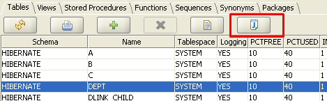
Alternatively, you can invoke the tool from the object browser tree by right-clicking a schema or table.
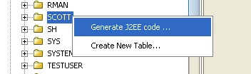
The code generation feature is supported for all DBMSs products that DB Solo supports; Oracle, Sybase, DB2, Microsoft SQL Server, solidDB, PostgreSQL and MySQL. By the same token, it will work on all supported OS platforms: Windows, Redhat Linux and Mac OS X.
The following schema-level requirements must be met for this feature to work correctly:
You can modify dozens of attributes that will affect how the code generation is performed. Instead of entering these values every time you use the tool, you can persist the settings into an xml project file by using buttons at the bottom of each screen. The settings file will contain all general settings as well as settings pertaining to individual objects.
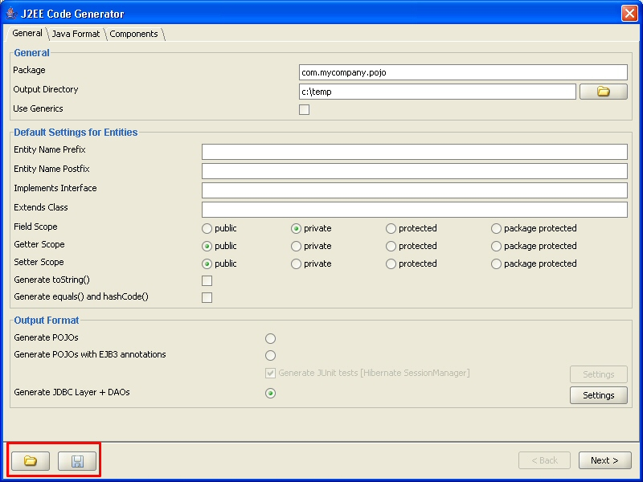
Figure - Save/Load Settings Buttons.
The first screen of the code generator tool allows you to set general options and settings that apply to all selected tables.
Package
Java package name that all generated classes will be in.
Output Directory
Output directory for generated classes. Notice that actual class files will be in a sub-directory of this directory as determined by the package name specified above. Click on the open button to browse the file system.
Use Generics
If this checkbox is checked, then the generated Java code will use Java 5 generics whenever applicable.
Entity Name Prefix
If you enter a string in this field, then all class names will get prefixed by the entered string. For example, if you enter XO and the entity name would be Emp, the resulting entity name would become XOEmp.
Entity Name Postfix
If you enter a string in this field, then all class names will get postfixed by the entered string. For example, if you enter 'Impl' and the entity name would be Emp, the resulting entity name would become EmpImpl.
Implements Interface
If you enter a name of an interface in this field, all generated classes will be declared to implement the interface in question. You can override this setting for individual classes on the next page.
Extends Class
If you enter a class name in this field, all generated classes will be declared to extend the class you entered. You can override this setting for individual classes on the next page.
Field Scope
All fields of the generated classes will be declared using the selected scope; public, protected, private or pacakge protected.
Getter/Setter Scope
All getter/setter methods of the generated classes will be declared using the selected scope; public, protected, private or pacakge protected.
Generate toString()
If this checkbox is selected, then all generated classes will have a toString() method defined. You can override this setting for individual classes on the next page.
Generate equals() and hashCode()
If this checkbox is selected, then all generated classes will have equals() and hashCode() methods defined. You can override this setting for individual classes on the next page.
Output Format
This is the most important setting of the page, since it will determine what kind of files will be generated by DB Solo.
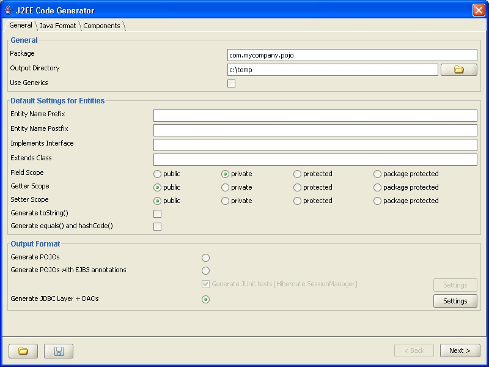
When the JDBC-output option is selected, you can modify the related settings by clicking on the 'Settings' button that is enabled. This will bring up the dialog shown below.
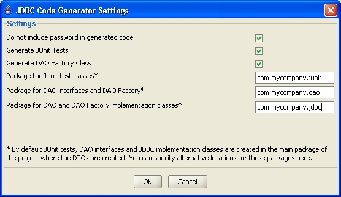
The dialog allows you to change the following attributes affecting the JDBC code generator output:
All generated Java-files will be processed by a code beautifier. The Java Format tab of the first screen allows you to configure the formatting options. Below is a list of currently supported formatting options.
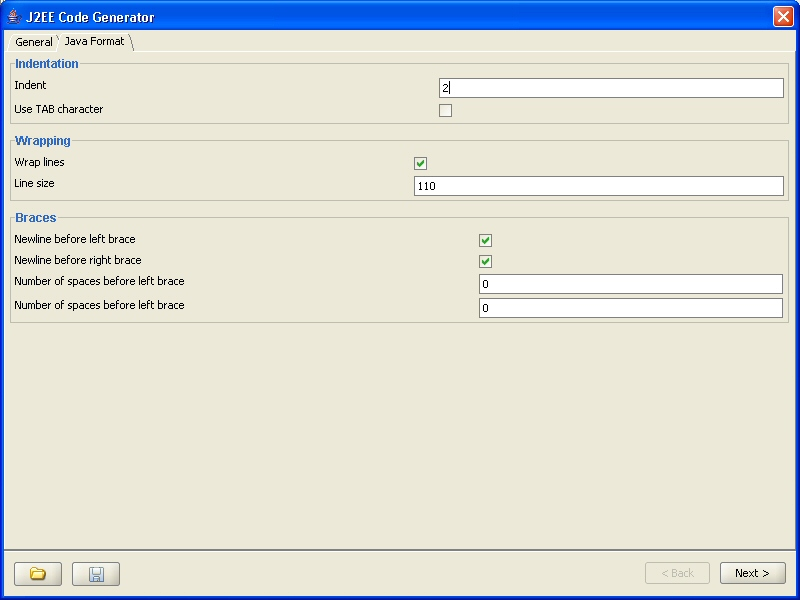
Embedded objects, or components, are Java objects that do not have their own identity, but can be embedded inside entities. Embedded objects can be shared between different entities, but instances of these embedded objects are never shared. To be able to embed a component in an entity, one must first be created on the first screen of the code generator, under the 'Components' tab.
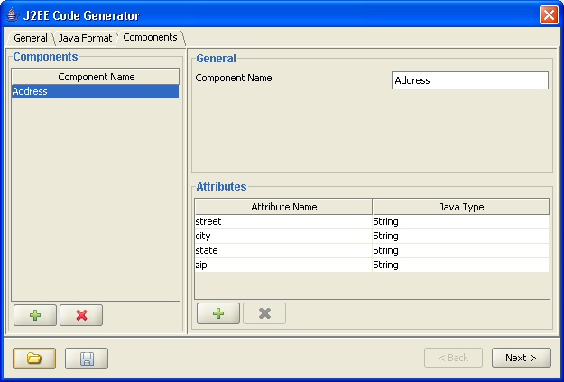
To create an embedded object, click on the Add-button on the left hand side and change the default name of the component. Next you need to add attributes to the new component using the Add-button in the Attributes-section. For each attribute, you can change the name and the Java type of the component field. After creating all necessary components and their attributes, you can embed them in your entities using the 'Embedded Components' tab on the second page of the J2EE code generator. To embed your newly created component into an entity, select the entity, go under the 'Embedded Components' tab and click on 'Embed'. This will bring up a dialog which will allow you to select the component you wish to embed.
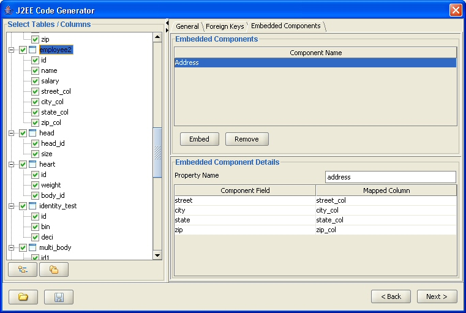
After selecting the component to embed, you must map its fields to the columns of the selected table. This is done by clicking on the appropriate 'Mapped Column' cell in the 'Embedded Component Details' area. Notice that primary key or foreign key columns of the table cannot be mapped to the component fields. Using the example above where a component named Address is embedded inside a table named employee2, the following code will be generated (only relevant portions are shown) when EJB 3.0 Pojo output-option is selected.
public class Employee2 implements java.io.Serializable
{
private Address address;
@AttributeOverrides({@AttributeOverride(name = "street", column = @Column(name = "street_col", unique = false, nullable = true, insertable = true, updatable = true))
, @AttributeOverride(name = "city", column = @Column(name = "city_col", unique = false, nullable = true, insertable = true, updatable = true))
, @AttributeOverride(name = "state", column = @Column(name = "state_col", unique = false, nullable = true, insertable = true, updatable = true))
, @AttributeOverride(name = "zip", column = @Column(name = "zip_col", unique = false, nullable = true, insertable = true, updatable = true))
})
public Address getAddress() { return this.address;}
public void setAddress(Address address) { this.address = address;}
}
Notice that code was also generated for the Address object itself. To differentiate embedded objects from other Java objects, they are marked with the @Embeddable annotation.
The second screen of the code generator wizard allows you to set options at individual object level. The tree control on the left hand side allows you to select which tables/columns to generate code for. Simply uncheck the checkbox next to a table/column to remove the object from the code generation process. Unchecking a table will automatically uncheck all the columns below it. The right-hand side of the screen varies based on the selection in the tree control. If a table is selected in the tree, then the right-hand side will show class-level settings for that particular table/class. If a column is selected, then the right-hand side will show property-level settings for the selected column/property.
The buttons below the tree control let you expand/collapse all items in the tree control.
If a table is selected in the tree conrol, the right-hand side will show table/class level settings corresponding to your selection. The first tab 'General' of this screen contrains general information about how the resulting Java class will look like.
Entity Name
This field allows you to override the default entity (class) name that DB Solo generated based on the table name.
Implements Inteface
If you enter an interface in this field, the generated class will be declared to implement the interface. Naturally, you have to provide methods, if any, that are specified in the interface.
Extends Class
If you enter a class name in this field, the class generated from the selected table will extend the entered class.
Version Column
If your table has an identifier column to be used with optimistic locking, you can specify it here. See Hibernate documentation for more information about optimistic locking.
Identifier Generation Method
This setting allows you to specify how values are generated for the unique identifier column (primary key) for this table. Possible values are:
Sequence Name
If your identifier generation strategy is defined to use a sequence, you can specify the sequence name in this field.
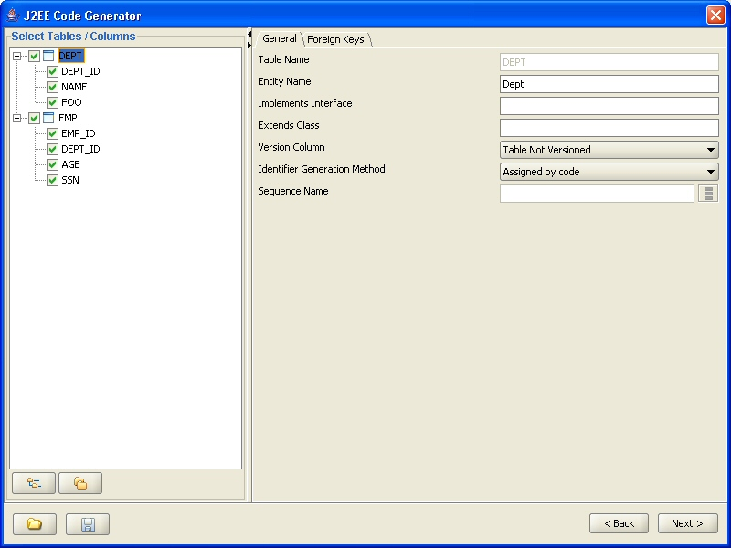
The relationships between tables, and therefore between generated classes, are based on foreign-key constraints. Currently all foreign key relationships will be generated either as one-to-many or one-to-one relationships in the output files. Many-to-many relationships are also supported by utilizing mapping tables, see the chapter below. This chapter talks about many-to-one relationships and the following one talks about one-to-one relationships. The code generator will automatically detect if a relationship is either one-to-one or many-to-one. To determine that, a simple rule is followed: if the table containing the foreign-key also has a unique (or primary key) constraint over the same columns that constitue the foreign key, then the relationship is one-to-one, otherwise it is many-to-one.
The table that has the foreign key constraint is the 'many' side and the table the foreign key constraint points to is considered the 'one' side. This means that the many-to-one side is the 'owning' side of the relationship. The characteristics of the generated mappings can be tweaked under the 'Foreign Keys' tab when a table is selected in the tree control.
The upper part of the screen contains all foreign key constraints that the selected table has, if any. The bottom part of the same screen lists details of the selected foreign key constraint.
We're going to use an example where we have two tables, Emp and Dept where Emp has a foreign key reference to Dept. The default settings will result in following relationships to be created when 'POJOs with EJB3 annotations' output option is selected (only relevant code shown):
public class Dept
{
private Set emps;
@OneToMany(cascade={CascadeType.ALL}, fetch=FetchType.LAZY, mappedBy="dept")
public Set getEmps() {
return this.emps;
}
public void setEmps(Set emps) {
this.emps = emps;
}
}
public class Emp
{
private Dept dept;
@ManyToOne(cascade={},fetch=FetchType.LAZY)
@JoinColumn(name="DEPT_ID", unique=false, nullable=true, insertable=true, updatable=true)
public Dept getDept() {
return this.dept;
}
public void setDept(Dept dept) {
this.dept = dept;
}
}
Generate code for one to many side
If this checkbox in unchecked, the one-to-many side property will not be generated at all. Using our example, the 'emps' property will not be generated at all:
public class Dept
{
}
Lazy
If this checkbox is checked, the property in question will be lazy-fetched, see Hibernate or EJB 3.0 documentation for more details on lazy-fetching. If the checkbox is unchecked, the property will be eagerly-fetched:
public class Dept
{
private Set emps;
@OneToMany(cascade={CascadeType.ALL}, fetch=FetchType.EAGER, mappedBy="dept")
public Set getEmps() {
return this.emps;
}
public void setEmps(Set emps) {
this.emps = emps;
}
}
Colletion Property Name
You can change the automatically generated property name by typing in a new name in this field. Using our example, if you entered 'employees' in the entry field, the following code would be generated:
public class Dept
{
private Set employees;
@OneToMany(cascade={CascadeType.ALL}, fetch=FetchType.EAGER, mappedBy="dept")
public Set getEmployees() {
return this.employees;
}
public void setEmployees(Set employees) {
this.employees = employees;
}
}
Collection Type
You can change the collection type that will hold the child objects. By default the collection type is Set, but also List can be used. Using our example, changing this to 'List' would produce the following code:
public class Dept
{
private List employees;
@OneToMany(cascade={CascadeType.ALL}, fetch=FetchType.EAGER, mappedBy="dept")
public List getEmployees() {
return this.employees;
}
public void setEmployees(List employees) {
this.employees = employees;
}
}
Generate code for many to one side
If this checkbox is unchecked, the many-to-one side will not have code for this relationship. Using our example, our Emp class would not have the 'dept' member variable at all:
public class Emp
{
}
Lazy
If this checkbox is checked, the property in question will be lazy-fetched, otherwise eagerly-fetched. See the example above.
Parent Reference Name
Name of the property that points to the parent object. Using our example, if you changed the name to 'department', the following code would be generated:
public class Emp
{
private Dept department;
@ManyToOne(cascade={},fetch=FetchType.LAZY)
@JoinColumn(name="DEPT_ID", unique=false, nullable=true, insertable=true, updatable=true)
public Dept getDepartment() {
return this.department;
}
public void setDepartment(Dept department) {
this.department = department;
}
}
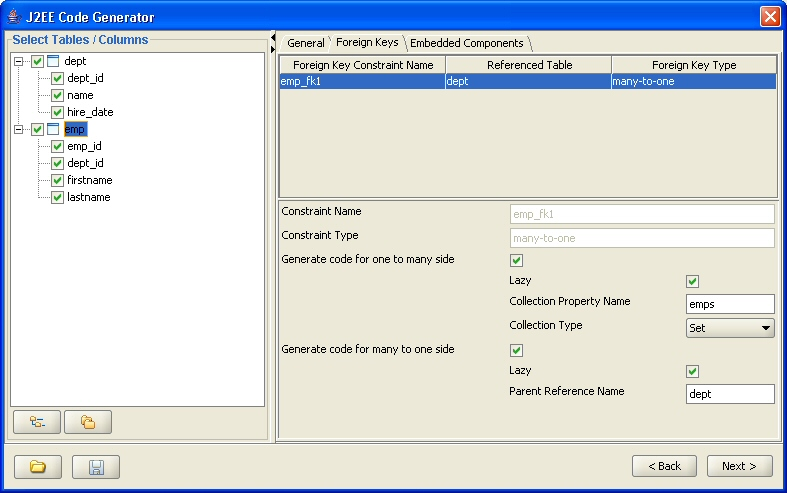
Figure - One-to-Many Foreign Key Settings
If the table that has the foreign key constraint also has a unique constraint whose columns match the foreign key columns, the relationship will be mapped as a one-to-one relationship. The DB Solo code generator can automatically detect when to use one-to-one or one-to-many mappings. Currently all one-to-one relationships are mapped as bidirectional relationships. Using an example where a table named 'heart' has a foreign key constraint (column body_id) to a table named 'body' and where the 'heart' table also has a unique constraint on the foreign-key column, the following EJB 3.0 annotated code would be generated:
public class Body implements java.io.Serializable
{
private Heart heart;
@OneToOne(mappedBy = "body")
public Heart getHeart() { return this.heart; }
public void setHeart(Heart heart){ this.heart = heart; }
}
public class Heart implements java.io.Serializable
{
private Body body;
@OneToOne
@JoinColumn(name = "body_id", unique = false, nullable = true, insertable = true, updatable = true)
public Body getBody() { return this.body;}
public void setBody(Body body){this.body = body; }
}
If the table containing the foreign key constraint has a primary key whose columns match with the foreign key columns, the primary key values of the related entities are guaranteed to match. Using the example above, the code for 'Body' would be identical, but instead of the @JoinColumn annotation, the 'Heart' class would use the @PrimaryKeyJoinColumn annotation as follows:
public class Heart implements java.io.Serializable
{
private Body body;
@OneToOne
@PrimaryKeyoinColumn
public Body getBody() { return this.body;}
public void setBody(Body body){this.body = body; }
}
Notice that the @PrimaryKeyJoinColumn does not need the column names to be specified.
Many-to-many relationships are supported by using mapping tables. A mapping table is a table with exactly two foreign-key constraints pointing to the tables that share the many-to-many relationship. In addition, the mapping table needs to have a primary key that covers the foreign key constraints' columns. Consider the schema below where a project can have multiple workers and workers can be assigned to multiple projects at the same time. In this example, project_worker is the mapping table.
CREATE TABLE project (project_id BIGINT NOT NULL PRIMARY KEY,
start_date DATETIME NOT NULL,
name VARCHAR(50) NOT NULL);
CREATE TABLE worker (worker_id BIGINT NOT NULL PRIMARY KEY,
first_name VARCHAR(50) NOT NULL,
last_name VARCHAR(50) NOT NULL);
CREATE TABLE project_worker (fk_project_id BIGINT NOT NULL, fk_worker_id BIGINT NOT NULL);
ALTER TABLE project_worker ADD CONSTRAINT project_worker_fk1 FOREIGN KEY (fk_project_id) REFERENCES project (project_id);
ALTER TABLE project_worker ADD CONSTRAINT project_worker_fk2 FOREIGN KEY (fk_worker_id) REFERENCES worker (worker_id);
ALTER TABLE project_worker ADD CONSTRAINT project_worker_pk1 PRIMARY KEY (fk_project_id, fk_worker_id);
To create a many to many relationship between the project and worker classes, you need to mark the project_worker table as a 'many-to-many mapping table'. This can be done by checking the appropriate checkbox in the 'General' screen. Notice that this button can only be selected for tables that contain two foreign keys and a primary key whose columns span the foreign key columns.
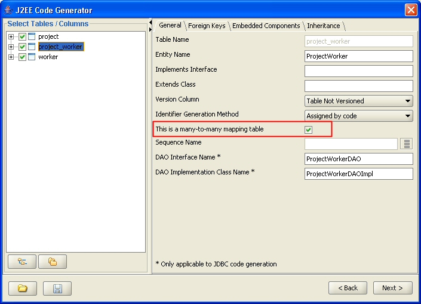
After selecting the many-to-many option, the foreign key panel of the same table will show the foreign key types as 'many-to-many' as depicted in the screen shot below. The foreign key screen lets you change the name and collection type of the properties that the generated Project and Worker classes will have.
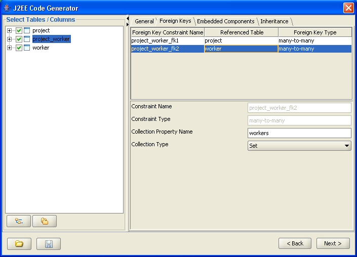
Once the mapping table has been set up correctly, the code generator will output the following code, including the @ManyToMany relationship on both sides.
public class Project
{
private Set<Worker> workers;
@ManyToMany
@JoinTable(name = "project_worker",
joinColumns = { @JoinColumn(name = "fk_project_id", referencedColumnName = "project_id") },
inverseJoinColumns = { @JoinColumn(name = "fk_worker_id", referencedColumnName = "worker_id") } )
public Set<Worker> getWorkers() { return this.workers; }
public void setWorkers(Set<Worker> workers) { this.workers = workers; }
}
public class Worker
{
private Set<Project> projects;
@ManyToMany(mappedBy = "workers")
public Set<Project> getProjects() { return this.projects;}
public void setProjects(Set<Project> projects) { this.projects = projects; }
}
When you select a column in the tree control, the right-hand side shows a screen that allows you to specify the code generator will treat the selected column. Naturally, if the column is unchecked in the tree conrol, these settings will not be applicable.
Java Type
The Java type for the property corresponding to the selected column. Notice that you must select Java types that make sense in the context of your column type. Currently the org.dom4j.Element type is only supported for Oracle XMLType data type, i.e. it cannot be used with SQL Server 2005 or DB2 native XML column data type.
Included in toString()
Is this column included in the toString() method of the generated class.
Include in equals() and hashCode()
Is this column included in the equals() and hashCode() methods of the generated class.
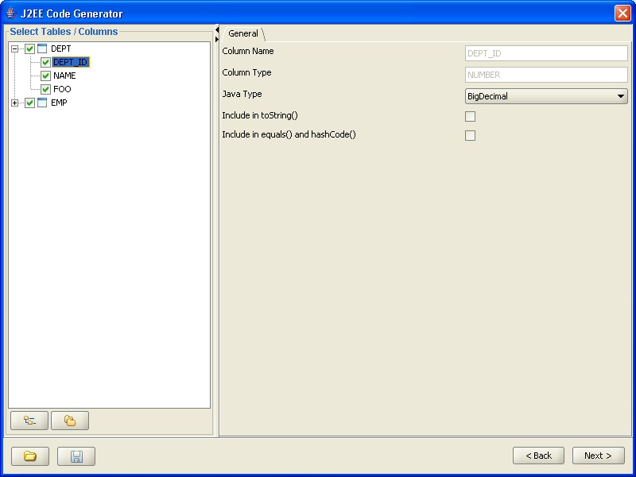
Figure - Column level settings
The inheritance tab allows you to assign the inheritance strategy for generated classes and specify how inheritance is represented in the database. Code generator supports two different EJB 3.0 inheritance types, single-table inheritance and joined inheritance. Please refer to the EJB 3.0 / JSR-220 documentation for detailed explanation of the various inheritance types.
Notice that the inheritance settings cannot be used with JDBC code generation.
Joined inheritance means that one table is mapped to a base class and N other tables contain the derived classes so that a derived class row has the same primary key value as the base class row in the base class table. The derived table usually has a foreign key to the primary key of the base class table, but the code generator does not require it. Only the base class should be set to 'Joined' inheritance type as shown below with the 'animal' table. The inheritance type of derived classes should be left untouched, i.e. they should be 'None'.
The base class table must have a discriminator column specified that contains a value that will determine the exact type of the persisted object. If the base class is abstract, you cannot specify a discriminator value for it, but if it is not abstract, you must specify a discriminator value for it.
The derived classes section of the panel allows you to add derived classes to the class hierarchy. Notice that you must specify at least one derived class.
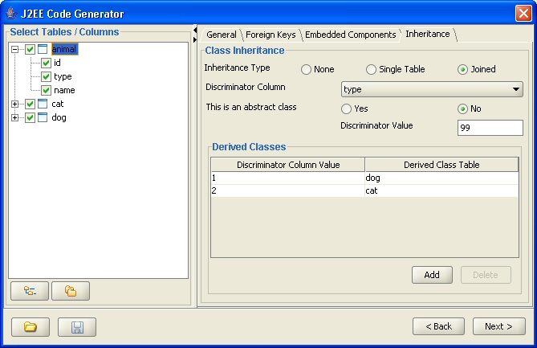
To add a new derived class click on the 'Add' button of the derived classes section. This will bring up the dialog presented below where you must enter a discriminator value that identifies the instances of the derived classes and also pick a table that contains the data for the derived class.
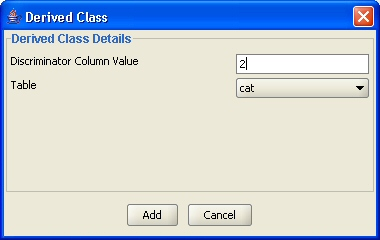
The sample code below (only relevant portions shown) is for base class called Animal and a derived class named Cat, the tables are 'dog' and 'cat' as depicted in the above examples.
@Entity
@Inheritance(strategy = InheritanceType.JOINED)
@DiscriminatorColumn(name = "type")
@DiscriminatorValue("99")
@Table(name = "animal", schema = "hibernate", catalog = "hibernate")
public class Animal
{
private int animalId;
private int type;
private String name;
} @Entity
@DiscriminatorValue("2")
@Table(name = "cat", schema = "hibernate", catalog = "hibernate")
@PrimaryKeyJoinColumn(name = "cat_id")
public class Cat extends Animal
{
private boolean stripes;
private CatOwner catOwner;
}
In the single table inheritance model, as the name suggests, one table contains the data for both the base class and all derived classes. For each class, base or derived, you must pick the columns that the class will contain.
Just like the Joined strategy, Single Table model requires a discriminator column and a discriminator value for the base class if it is not abstract.
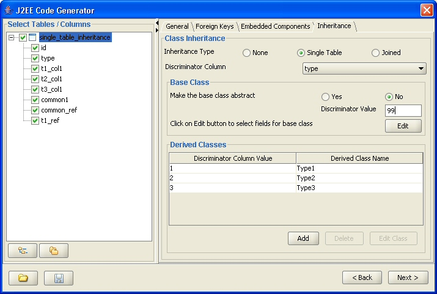
Since one table contains all fields of the base class and derived classes, you must first select columns that will be mapped to the base class. By clicking on the 'Edit' button, you can bring up the base class column selection dialog shown below. Notice that the base class will automatically contain the primary key and discriminator columns, therefore they are not shown on the list of available columns.
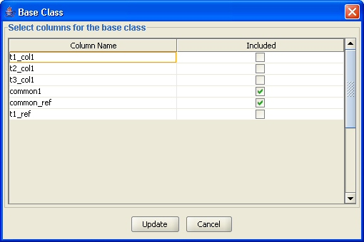
To add derived classes to the class hierarchy, click on the 'Add' button in the 'Derived Classes' section of the screen. This will bring up a dialog presented below where you must enter a name for the new derived class, its discriminator value as well as the columns that will be mapped to it. Notice that you must pick at least one column for each derived class.
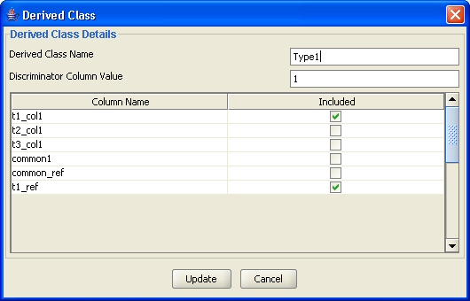
The sample code below (only relevant portions shown) is for base class called SingleTableInheritance and a derived class named Type1, both entities contained in the single_table_inheritance table shown in the screen shots above.
@Entity
@Inheritance(strategy = InheritanceType.SINGLE_TABLE)
@DiscriminatorColumn(name = "type")
@DiscriminatorValue("99")
@Table(name = "single_table_inheritance", schema = "hibernate", catalog = "hibernate")
public class SingleTableInheritance
{
private int id;
private String common1;
} @Entity
@DiscriminatorValue("1")
public class Type1 extends SingleTableInheritance
{
private String t1_col1;}
Support for Oracle XMLType data type is provided in both EJB3 annotated classes and the JDBC access layer code. The generated code in both cases uses Oracle-specific classes such as OracleResultSet, OraclePreparedStatement and oracle.sql.OPAQUE. XMLType columns can be mapped to either Strings or org.dom4j.Elemenet types on the Java side. Trying to map XMLType columns to any other data type will fail. Notice that when EJB3 generation is used with XMLType columns, the generated code is Hibernate-specific, i.e. it's not generic EJB3 anymore and will not work outside Hibernate. The annotations for an XMLType column will look as follows:
@Column(name = "XMLCOL", updatable = true, nullable = true, insertable = true)
@Type(type = "com.mycompany.HibernateOracleXML2Dom4jElement")
public Element getXMLValue() { return this.XMLValue; }
public void setXMLValue(Element XMLValue) { this.XMLValue = XMLValue; }
In this example the HibernateOracleXML2Dom4jElement class is generated by DB Solo and will implement the Hibernate UserType interface which is the standard way of providing custom mappings in Hibernate.
The last page of the code generator tool will show a list of files that were produced. The upper part of the screen has a list of Java or xml files that the tool produced. The bottom of the screen will show the contents of the selected file.
Although the files are saved on your hard-drive you have two additional buttons on the screen that allow you to copy the selected file to system clipboard or to save it to a different file.
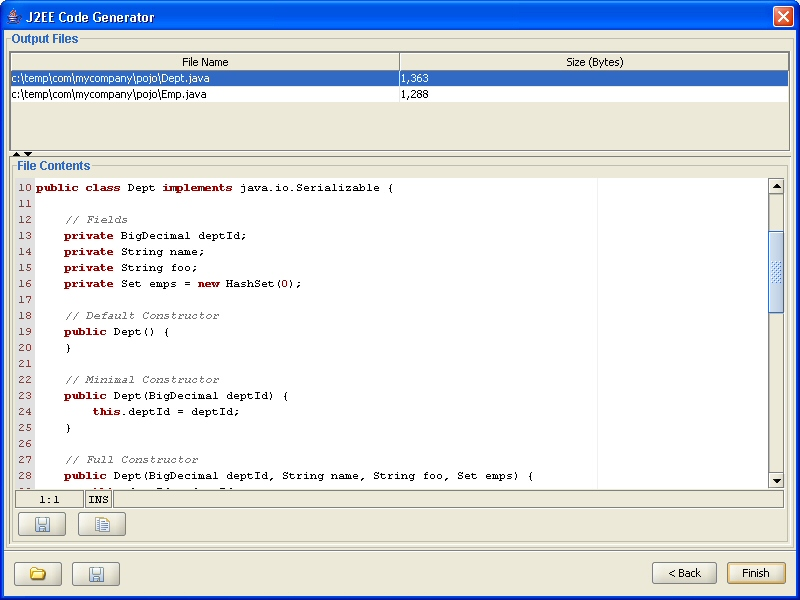
Figure - Output panel
| Back to Index | DB Solo www.dbsolo.com support@dbsolo.com |